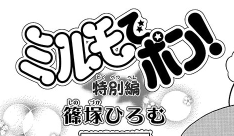

記事を書くのが本当に遅くなってしまいましたが、、篠塚ひろむ先生による「新作かきおろし漫画」、皆さんもちろんご覧になられていますよね。
まだの方はちゃおコミへのリンクからぜひ読んでみてください！
さて今更ながらに、新作漫画の感想をネタバレにならない程度に簡単に書いてみます。

- 黒幕が妖精Mなところに篠塚先生らしさが光っているなぁ。
- ワナもしっかり二重に仕掛ける、抜かりない大物妖精Mさん。
- ワナの被害に遭うために３コマも登場した妖精忍者。よく見ると妖精Mと登場コマ数はいっしょで、妖精Mは面白く思っていなさそう。
- お供が被害に遭っていないのは、お供たちはなんとなく気がついていて「どうぞどうぞ」とか言っているのかな。
- ミルモの方が大人っぽいけど体はちぃちゃんの方が大きいというサイズ差がツボ。
- 遊びに行く先が公園なのがかわいい。二人はどんなことして遊んでいるのだろーか？
- 妖精たちの絵柄がちょっと丸くなったような。丸っこいちぃちゃんの影響かな？
- 1コマ目の丸っこいほっぺたを指でぷにぷにしているMさんがかわいすぎ！
あまり感想になってなくてすみません・・。
皆さんの感想も聞かせていただけるとうれしいです(^^)
そしてこれからもミルモの新しい展開がやってくることに期待しましょう！
(2022/6/18)